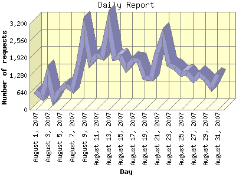

Report generated by Analog 6.0 and Report Magic 2.21
|
Web Server Statistics for "Harish Narayanan (hnarayan) - August 2007" Report generated by Analog 6.0 and Report Magic 2.21 |
The Daily Report identifies the activity for each day within the reporting period. Remember that one page hit can result in several server requests as the images for each page are loaded.

| Day | Number of requests | Number of bytes transferred | Percentage of the bytes | Percentage of the requests | |
|---|---|---|---|---|---|
| 1. | August 1, 2007 | 679 | 24.521 MB | 1.62% | 1.46% |
| 2. | August 2, 2007 | 485 | 34.085 MB | 2.25% | 1.04% |
| 3. | August 3, 2007 | 1,295 | 61.738 MB | 4.08% | 2.78% |
| 4. | August 4, 2007 | 363 | 23.737 MB | 1.57% | 0.78% |
| 5. | August 5, 2007 | 725 | 30.516 MB | 2.02% | 1.56% |
| 6. | August 6, 2007 | 896 | 34.797 MB | 2.30% | 1.93% |
| 7. | August 7, 2007 | 749 | 41.246 MB | 2.73% | 1.61% |
| 8. | August 8, 2007 | 1,631 | 73.835 MB | 4.88% | 3.50% |
| 9. | August 9, 2007 | 2,959 | 90.580 MB | 5.99% | 6.36% |
| 10. | August 10, 2007 | 1,759 | 52.175 MB | 3.45% | 3.78% |
| 11. | August 11, 2007 | 2,006 | 68.171 MB | 4.51% | 4.31% |
| 12. | August 12, 2007 | 1,955 | 57.124 MB | 3.78% | 4.20% |
| 13. | August 13, 2007 | 3,199 | 95.786 MB | 6.33% | 6.88% |
| 14. | August 14, 2007 | 1,931 | 64.017 MB | 4.23% | 4.15% |
| 15. | August 15, 2007 | 1,957 | 81.130 MB | 5.36% | 4.21% |
| 16. | August 16, 2007 | 1,534 | 57.003 MB | 3.77% | 3.30% |
| 17. | August 17, 2007 | 1,838 | 34.526 MB | 2.28% | 3.95% |
| 18. | August 18, 2007 | 1,828 | 67.156 MB | 4.44% | 3.93% |
| 19. | August 19, 2007 | 1,194 | 97.755 MB | 6.46% | 2.57% |
| 20. | August 20, 2007 | 1,159 | 44.410 MB | 2.94% | 2.49% |
| 21. | August 21, 2007 | 2,099 | 43.741 MB | 2.89% | 4.51% |
| 22. | August 22, 2007 | 2,723 | 44.389 MB | 2.93% | 5.85% |
| 23. | August 23, 2007 | 1,680 | 46.093 MB | 3.05% | 3.61% |
| 24. | August 24, 2007 | 1,547 | 33.899 MB | 2.24% | 3.32% |
| 25. | August 25, 2007 | 1,338 | 31.105 MB | 2.06% | 2.88% |
| 26. | August 26, 2007 | 1,348 | 16.562 MB | 1.09% | 2.90% |
| 27. | August 27, 2007 | 1,089 | 25.864 MB | 1.71% | 2.34% |
| 28. | August 28, 2007 | 1,316 | 34.727 MB | 2.29% | 2.83% |
| 29. | August 29, 2007 | 1,109 | 70.106 MB | 4.63% | 2.38% |
| 30. | August 30, 2007 | 822 | 8.494 MB | 0.56% | 1.77% |
| 31. | August 31, 2007 | 1,321 | 23.597 MB | 1.56% | 2.84% |
Most active day August 13, 2007 : 476 pages sent. 3,199 requests handled. 100,438,579.00 served.
Daily average: 1,501 requests handled. 48.803 MB served.
This report was generated on October 30, 2007 16:30.
Report time frame August 1, 2007 00:06 to August 31, 2007 23:56.
| Web statistics report produced by: | |
 Analog 6.0 Analog 6.0 |  Report Magic 2.21 Report Magic 2.21 |